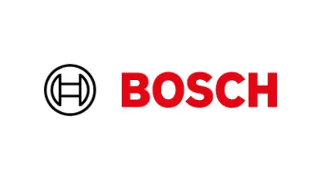
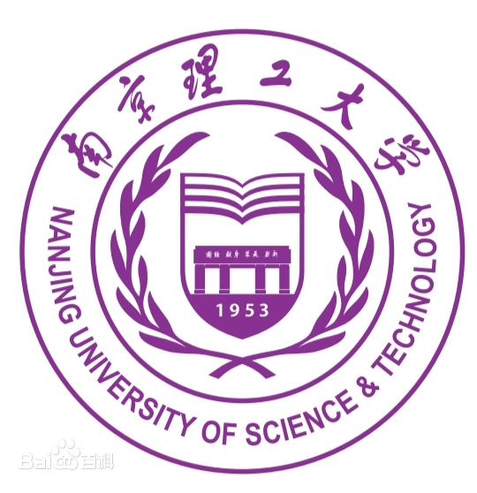
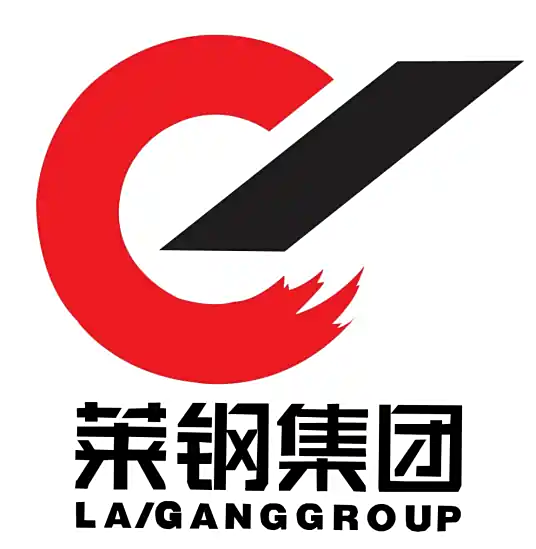
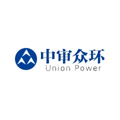

· 专业知识扎实：具有税务师证书、资产评估师证书、证券从业资格证；CPA进度：4/6；
· 系统实操能力：熟练运用 SAP 系统完成物料查询、转让定价维护等操作，可快速适应新工作需求。
· Excel VBA 宏编程：数据自动化处理（多表合并、数据汇总）；
· Power BI：熟练运用 Power BI进行数据清洗、建模与可视化分析，可制作业务报表、dashboard 看板，实现数据直观展示与动态筛选；
· AI 工具：主动探索 AI 工具应用，并结合业务场景落地实践，有效提升个人与团队工作效率。
· 沟通协调能力：曾任研究生支部支委，协同多个支部开展活动，任期内带领支部荣获“学院优秀党支部”称号；
· 问题解决能力：持续了解业务痛点，输出方案解决问题；
· 快速适应能力：面对岗位调整与工作内容变化，可高效适配并稳定输出。



